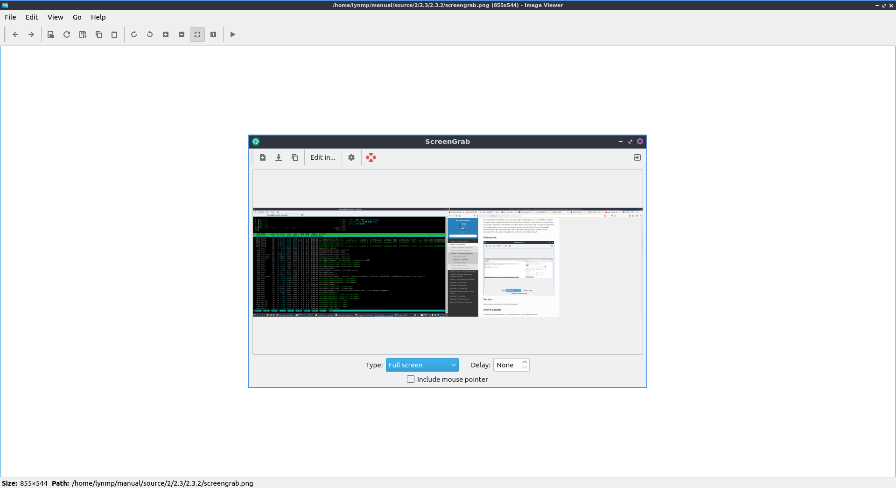
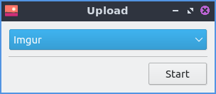
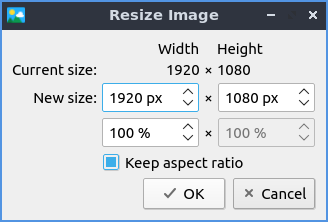
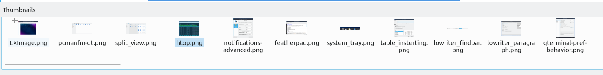
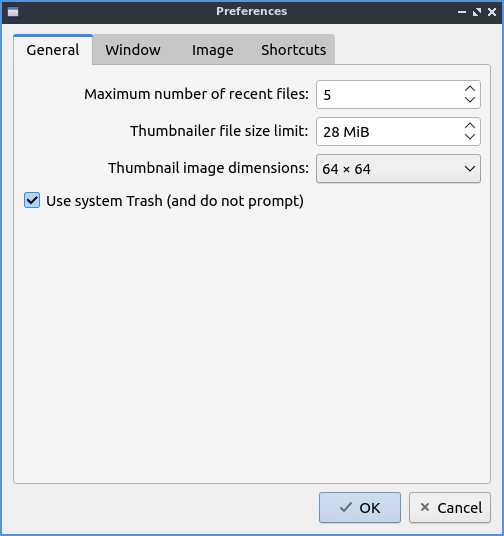
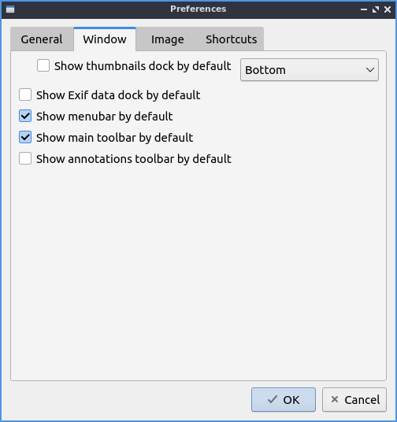
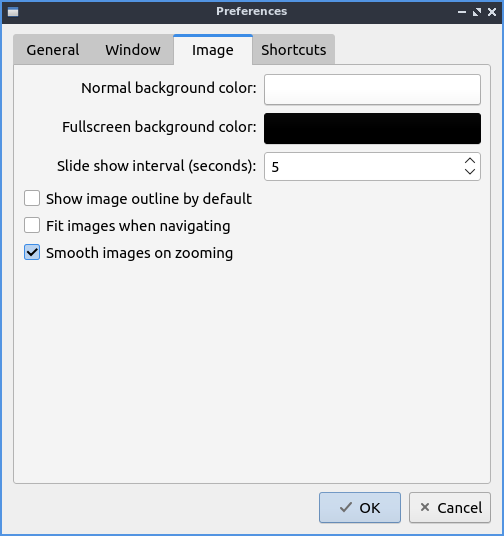
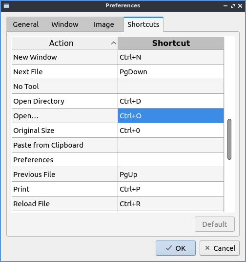

Chapter 2.3.1 LXImage¶
LXImage is the default image viewer for Denios-OS.
Usage¶
To open a picture press , Control + O, or press the button that looks like an upward pointing arrow. To open a directory full of images press Control+D or . If you do not like the picture press Del or . To open a new window of LXImage press Control +N or . To view the properties of your image by . To view your recently viewed pictures . To clear your recently opened files . To reload your file after you save it again press Control +R, press the circular arrow button, or .
To have LXImage open the next file in a folder press Right arrow and to view the previous image press the Left arrow. To open an entire directory or press Control +D. To save the file as something press Control+Shift+S, the downward pointed arrow with an I on it, or . To save the file with the same file name press Control+S or .
If you wish to print a picture after viewing it from the or press control+ p to bring up a print dialog. To exit the window with a keyboard shortcut press the Escape key.
If you want to upload a picture to share it online press and a new window will pop up with a drop down menu to show where to upload the picture to. To actually upload the file press Start. The URL of the image will then show up from after it is finished uploading. You can then copy the URL by selecting the text and then pressing Control+C or pressing the Copy button.
To rotate an image to the right press the circular arrow that points to the right, press R, or go to . To rotate counterclockwise use the circular arrow pointing to the left, press L, or . To zoom in on a picture press the icon with a magnifying glass with a + symbol on it, , or press control + +. To zoom out press the button of a magnifying glass with a - symbol in it, or press control + -.
To flip your image on the vertical axis press V or . To flip your image on the horizontal axis press H or . To change the image to a different size and a dialog box will show up. To see how large your image currently is in pixels view the Current size dialog. To change how wide the image is change Width column in the New size row. To change the height of the image under Height and change to the desired size. To change which size your image is in percentage change the field with % under Width. To allowing stretching the image while resizing it uncheck the Keep aspect ratio checkbox. To rename a file press F2 or .
To see how big an image is on the bar at the bottom Size will tell you the size in pixels of an image. To see where the current image is saved read the path in the Path field.
To copy an image to the clipboard you can . To paste an image to the clipboard . To copy the path of an image to the clipboard .
To view the next picture on your image press the right arrow or page down and conversely to view the previous image press the left arrow or page up. You can also scroll between different pictures with the mousewheel or by pressing the right and left pointing arrow buttons on the toolbar. To jump to the first picture press home or . To jump to the last picture press end or . You can also go to the next or previous files with or .
To view thumbnails of the current directory you can toggle thumbnails by pressing T or and thumbnails will show at the bottom with a scrollbar at the bottom of the window to view the whole folder. To open the thumbnail of a picture in a another program such as one to edit that picture right click and select the program you want to edit with or you can do this by . To rename an image after viewing it right click on the thumbnail select and type the filename for the picture you want. To move a file to the trash can right click on it and select .
To view the picture entirely press or the button with a vertical and horizontal arrow and a folded over bottom right corner. To return your image to its original size or press the 1 toolbar button. To show an outline around the image O or . To toggle showing information about the settings on the camera .
To view the picture as fullscreen press f11, right click , double click on the image, or . To exit fullscreen double click the image, press F11, or right click again. To have a slideshow of you pictures in your current folder or right click and select . Once you start the slideshow on the toolbar a play pause button will appear on the toolbar or you can stop the slideshow by right clicking and selecting .
To close LXImage press Control+w or .
Annotations¶
To show annotations controls or right click and select . To edit your images with LXImage there are several buttons on the right hand side of the toolbar. To draw and arrow press the button that looks like an arrow click once where you want the arrow to start and then drag the direction you want the arrow to point and click it where you want the arrowhead to be. To draw a hollow rectangle left click on the button with a hollow rectangle and click and drag to the size of the rectangle you want. To draw a hollow circle annotation press the button that looks like a hollow circle. To draw numbers on your pictures press the 3 button. To stop drawing annotations press the button with a circle with a slash through it.
Warning
Annotations in LXImage cannot be undone with an undo functionality. Also you will not be prompted to save your unsaved annotations when closing LXImage.
Customizing¶
To change preferences in LXImage . The General tab has settings for recent files, thumbnails, and trash. To cancel your changes press the Cancel button. To not generate thumbnails for really large images change the Thumbnailer size limit field. To change how big thumbnails to use change the Thumbnail image dimensions field. To apply your settings and exit the preference dialog by pressing the OK button.
The Window tab manages how the window appears. To show the thumbnails dock by default check the Show thumbnails dock by default checkbox and choose where it is to the right. To show metadata about your pictures by default check the Show Exif data dock by default checkbox. To toggle showing the menubar check/uncheck the Show menubar by default checkbox. To toggle showing the main toolbar check/uncheck the Show main toolbar by default checkbox. To show the annotations toolbar by default check the Show annotations toolbar by default.
The Image tab has settings for how LXImage displays images. To change the background color in a window press the button next to Normal background color and then a window will pop up showing your color choice. To change the background color when fullscreen press the button next to Fullscreen background color and the same color picker window will appear. To change how long it takes for a each slide to change change in a slideshow change the Slide show interval (seconds) field. To show the image outline by default check the Show image outline by default checkbox. To fit images when navigating check the Fit images when navigating checkbox. To smooth images when you zooming check the Smooth images on zooming checkbox.
The Shortcuts tab has settings for changing keyboard shortcuts in LXImage. To see what a shortcut will do read the General column. To change a shortcut double click on the Shortcut column and press what you want the shortcut to be. To reset keyboard shortcuts to default press the Default button.
Version¶
Denios-OS ships with version 1.1.0 or LXImage.
How to Launch¶
To launch LXImage from the menu or run
lximage-qt
from the command line. The icon for LXImage is an orange landscape scene of a sunset.